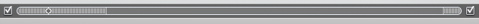

동적인 드롭존을 쉽게 편집하려면,
■
드롭존 편집기를 사용하십시오.
드롭존 단추(아래 참조)를 클릭하여 메뉴상의 각 드롭존에 대한 패널이 있는 드롭존 편집기를 여십시오. 미디어 패널에 있는 동영상 또는 사진을 각 드롭존으로 드래그하기만 하면 됩니다. 드롭존 편집기의 사용에 관한 추가 정보를 보려면, 아래의 관련 주제를 참조하십시오.
■
나타나는 메뉴에서 동적 드롭존을 편집하십시오.
동적인 드롭존이 있는 메뉴가 iDVD 윈도우에 나타나는지 확인하십시오. 드롭존이 메뉴에서 어떻게 이동하는지 보려면, 배경영상 단추(드롭존 왼쪽에 있는)를 클릭하십시오. 배경영상 단추를 다시 클릭하면 배경영상이 중단됩니다.
배경영상 표시(작은 다이아몬드 모양 단추)를 편집하려는 드롭존이 메뉴에 나타날 때까지 이동 막대(아래 참조)를 따라 드래그하십시오. 표시가 보이지 않는다면, 보기 > 배경영상 표시 보기를 선택하십시오.
미디어 단추를 클릭하고 동영상 또는 이미지를 클릭하여 드롭존으로 드래그하려는 미디어에 접근하십시오. 또한, 컴퓨터의 아무 곳에나 저장되어 있는 파일을 드래그할 수도 있습니다.
모든 드롭존이 채워질 때까지 영상 표시를 드래그하여 각 드롭존에 접근하면서 이 방식을 계속하십시오.
배경영상 단추를 클릭하여(드롭존 단추 왼쪽에 있는) 결과를 보십시오.
